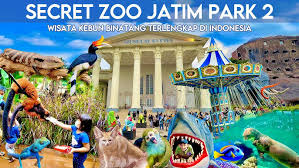
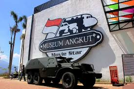
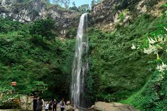

1. Kampung Warna Warni Jodipan

Deskripsi singkat :
Dulunya pemukiman kumuh yang disulap menjadi kampung wisata penuh warna yang artistik di bantaran Sungai Brantas. Sangat ikonik untuk berfoto dengan latar rumah warna-warni dan Jembatan Kaca yang menghubung kan dengan Kampung Tridi.
Rating : ⭐ 4.3 / 5.0
Jumlah Ulasan : 💬 25.000+ ulasan
Lokasi : 📍Jl. Ir. H. Juanda No.RT.7, Jodipan, Kec. Blimbing, Kota Malang.
2. Jatim Park 2
Deskripsi singkat :
Kompleks wisata edukasi yang memadukan kebun binatang modern (Batu Secret Zoo) dengan Museum Satwa. Tempat ini menawarkan pengalaman melihat satwa secara interaktif dan belajar tentang spesimen hewan yang sudah punah. Cocok untuk semua usia, terutama keluarga.
Rating : ⭐ 4.6 / 5.0
Jumlah Ulasan : 💬 65.000+ ulasan
Lokasi : 📍Jl. Raya Oro-Oro Ombo No.9, Temas, Kec. Batu, Kota Batu.
3. Museum Angkut
Deskripsi singkat :
Museum transportasi modern dengan koleksi kendaraan antik dan unik dari berbagai era. Pengunjung dapat berkeliling ke area tematik yang mereplikasi kota-kota terkenal dunia. Tempat ini sangat instagramable dan juga edukatif untuk keluarga.
Rating : ⭐ 4.6 / 5.0
Jumlah Ulasan : 💬 60.000+ ulasan
Lokasi : 📍Jl. Terusan Sultan Agung No.2, Ngaglik, Kec. Batu, Kota Batu.
4. Taman Rekreasi Selecta

Deskripsi singkat :
Taman rekreasi legendaris di Kota Batu yang terkenal dengan hamparan taman bunga yang indah dan kolam renang alami. Udara di sini sangat sejuk karena dikelilingi oleh pemandangan Gunung Arjuna, Welirang, dan Anjasmoro. Tempat ini cocok untuk bersantai dan menghabiskan waktu bersama keluarga.
Rating : ⭐ 4.5 / 5.0
Jumlah Ulasan : 💬 30.000+ ulasan
Lokasi : 📍Jl. Raya Selecta No.1, Tulungrejo, Kec. Bumiaji, Kota Batu.
5. Air Terjun Coban Rondo
Deskripsi singkat :
Air terjun setinggi 84 meter yang terletak di tengah hutan pinus dengan suasana sejuk dan asri. Di kawasan ini juga terdapat Labirin Coban Rondo dan wahana outbound lainnya. Destinasi yang sempurna untuk pecinta alam dan kegiatan luar ruangan.
Rating : ⭐ 4.4 / 5.0
Jumlah Ulasan : 💬 20.000+ ulasan
Lokasi : 📍Pandesari, Kec. Pujon, Kabupaten Malang.